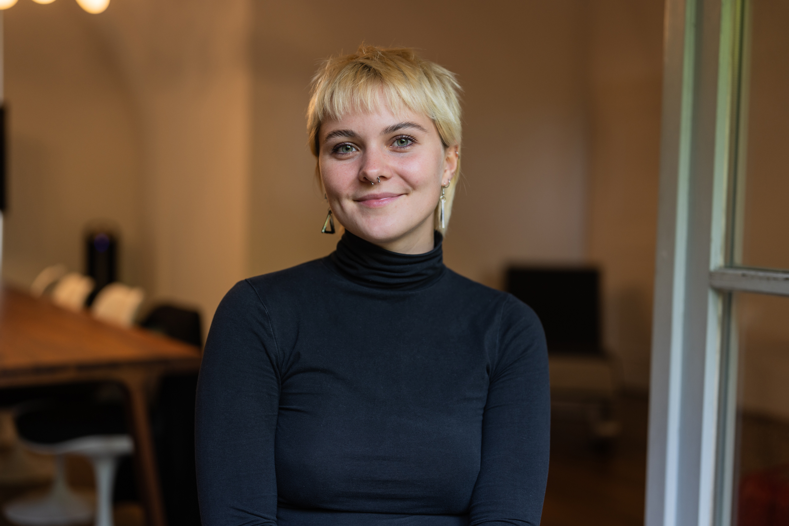

See me, judge me, pay me: Gendered effort moralization in work and care.
Roth, L. H. O., Tissot, T. T., Fischer, T., & Masak, S. C.
Collabra: Psychology, 11(1), 140759.
Read paper ↗Exploring how we think, feel, and connect — from the brain to the social world.

My work brings together cognitive neuroscience and psychology to study the relationship between brain, body, and behaviour.
I am pursuing master's degrees in Cognitive Neuroscience at Freie Universität Berlin and Developmental Psychology at the University of Vienna. Alongside my studies, I work as a student assistant in the Neurocomputation and Neuroimaging Unit, investigating somatosensory working memory in the MeMoSLAP project.
My research experience spans early development, interoception, political emotions, mindfulness, and AI persuasion. Across these topics, my work draws on behavioural experiments, neuroimaging, and quantitative analysis.
Roth, L. H. O., Tissot, T. T., Fischer, T., & Masak, S. C.
Collabra: Psychology, 11(1), 140759.
Read paper ↗Tünte, M. R.*, Masak, S. C.*, Carrera Saénz, C., Francuz, M., Gossens, F., Kalina, R., Tsakiris, M., & von Mohr, M.
Registered report · *Shared first authorship
Read paper ↗Masak, S. C., Meindl, D., Roth, L. H. O., & Tran, U. S.
Tünte, M. R., Vanoncini, M., Masak, S. C., Schug, P. C., Fischer, A., Kayhan, E., Avetisyan, N. B., & Höhl, S.
With Christopher Mlynski, Leopold Roth, Veronika Job and collaborators.
No publications match your search.
Publication statuses as listed in the September 2026 CV.
Somatosensory working memory in the MeMoSLAP project. Study coordination, concurrent tDCS and fMRI, neuronavigation, and independent operation of the Siemens Prisma 3T scanner at the CCNB.
AI conversations and climate policy opinions. International survey design across 24 countries and comparison of Bayesian and frequentist analysis frameworks.
Political emotions and interoception in the era of social media, supervised by Dr. Markus Tünte. Registered report awarded in-principle acceptance at PCI RR.
Eating disorder research, REDCap clinical assessments, ecological momentary assessment analysis in R, and first- and second-level fMRI analysis in SPM12.
Language acquisition, Theory of Mind, and altercentric biases. Conducted over 50 research sessions with children aged 2–5 years.
Freie Universität Berlin
Coursework in statistical modelling, artificial neural networks, and neural control of visual cortex.
University of Vienna
University of Vienna · With distinction
Thesis on mindfulness and social mindfulness. Merit scholarships in 2022, 2023, and 2024.
Analysis & computation
R · Python · MATLAB · JASP · Basic PyTorch / deep learning
Brain & behaviour
MRI / fMRI · SPM · EEG / FieldTrip · tDCS · Neuronavigation · Tobii eye tracking · Introductory fNIRS
Research practice
Qualtrics · LimeSurvey · REDCap · Preregistration · Registered reports · Reproducible code
Languages
German — native · English — C2 · Spanish — B1